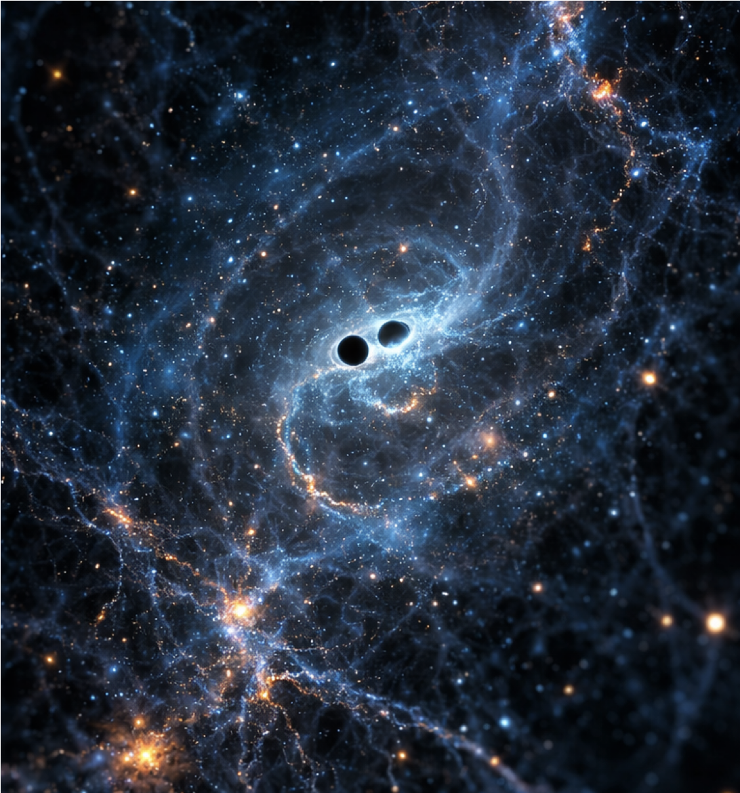
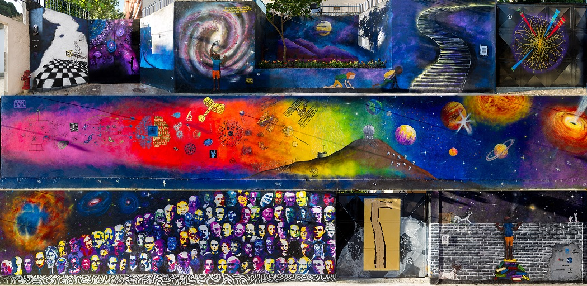

Isabela Santiago de Matos
Cosmologist
Researcher at
Centro Brasileiro de Pesquisas Físicas (CBPF)

Cosmologist
Researcher at
Centro Brasileiro de Pesquisas Físicas (CBPF)
As a cosmologist, I am fascinated by the history of the Universe on the large scales. My main research interest is to understand how much we can learn about the cosmos and the underlying theory of gravity using gravitational wave observations, as well as its combinations with large-scale structures and other cosmological probes. I have been particularly focused on the following topics:
I recently became a permanent researcher at the COSMO department of the Brazilian Center for Physics Research (CBPF), in Rio de Janeiro. Previously I have worked at the Institute of Cosmology and Gravitation (ICG) of the University of Portsmouth, and at the ICTP-South American Institute for Fundamental Research ICTP-SAIFR, in São Paulo. You can find all my papers in Inspire. For Brazilians, this is my CV Lattes.

I am involved in both current and future planned gravitational wave detectors:
I am a member of the Brazilian Unit of the third generation detector Einstein Telescope, and have recently joined LIGO.
Most of the few hundreds of gravitational wave events observed so far by LIGO-Virgo-KAGRA have been identified as coming from binary black-hole mergers. By the time of third generation detectors we will accumulate maybe hundreds of thousands of
them. Some small fraction may even be accompained by electromagnetic counterparts, when a neutron star composes the system.
I have been very excited about analysing this fantastic data and learning about the Universe and those misterious objects from it. Maybe unveil the nature of dark energy?
I am also a member of the galaxy survey LSST-DESC, which will provide a wealth of information about the large-scale structure of the Universe mapping galaxy positions and shapes.
If you are a graduate student interested in working with us at CBPF, take a look at this webpage.
You can download the lecture notes of this 30h Summer course I gave at ICTP-SAIFR below.
Part I: The homogeneous and isotropic Universe
Part II: The large-scale structure
Check out this recent outreach article of Revista FAPESP about my work (in Portuguese)
You can watch this outreach talk (in Portuguese) I gave at the ICTP-SAIFR in youtube.
You can email me at isabela-matos@cbpf.br
Centro Brasileiro de Pesquisas Físicas
Rua Dr. Xavier Sigaud, 150, CEP 22290-180, Rio de Janeiro

Walls of CBPF, photo by Luiz Baltar